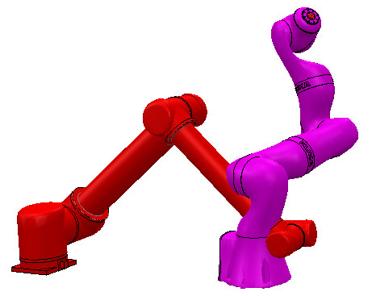

|
Collision detectionCoppeliaSim can detect collisions between two collidable entities in a flexible way. The calculation is an exact interference calculation. Collision detection, as its name states, only detect collisions; it does however not directly react to them (for collision response, refer to the dynamics module).  [Collision detection between two manipulators] Using the API function sim.checkCollision, one can easily detect collision between entities, for instance collision detection between a robot and its environment, from within a simulation script, in each simulation step: #python
def sysCall_init():
sim = require('sim-2')
robotBase = sim.self:getObject('/robotModelAlias')
self.robotCollection = sim.scene:createObject({'type': 'collection'})
self.robotCollection:addItem(robotBase, {'mode': 'tree'})
def sysCall_sensing():
result, pairHandles = self.robotCollection:checkCollision(sim.handle_all)
if result > 0:
print(f'Robot is colliding. Colliding pair is {getAsString(pairHandles)}')
--lua
function sysCall_init()
sim = require('sim-2')
local robotBase = sim.self:getObject('/robotModelAlias')
robotCollection = sim.scene:createObject({type = 'collection'})
robotCollection:addItem(robotBase, {mode = 'tree'})
end
function sysCall_sensing()
local result, pairHandles = robotCollection:checkCollision(sim.handle_all)
if result > 0 then
print('Robot is colliding. Colliding pair is ' .. getAsString(pairHandles))
end
end
One can also temporarily modify the color of objects or whole collections, in order to visually indicate a collision: #python
def change_pair_color(entity_pair, color_pair):
self.original_color_data = []
self.original_color_data.append(entity_pair[0])
self.original_color_data.append(entity_pair[0]:changeColor(color_pair[0]))
self.original_color_data.append(entity_pair[1])
self.original_color_data.append(entity_pair[1]:changeColor(color_pair[1]))
def restore_pair_color():
if hasattr(self,'original_color_data'):
self.original_color_data[0]:restoreColor(self.original_color_data[1])
self.original_color_data[2]:restoreColor(self.original_color_data[3])
def sysCall_init():
sim = require('sim-2')
robot_base = sim.self:getObject('/irb360')
self.robot_collection = sim.scene:createObject({'type': 'collection'})
self.robot_collection:addItem(robot_base, {'mode': 'tree'})
self.collision_colors = [[1, 0, 0, 255], [1, 0, 1, 255]] # collider and collidee
def sysCall_sensing():
result, pair_handles = self.robot_collection:checkCollision(sim.handle_all)
restore_pair_color()
if result:
# Change color of the collider and collidee objects:
change_pair_color([pair_handles[0], pair_handles[1]], self.collision_colors)
def sysCall_cleanup():
restore_pair_color()
--lua
function changePairColor(entityPair, colorPair)
originalColorData = {}
originalColorData[1] = entityPair[1]
originalColorData[2] = entityPair[1]:changeColor(colorPair[1])
originalColorData[3] = entityPair[2]
originalColorData[4] = entityPair[2]:changeColor(colorPair[2])
end
function restorePairColor()
if originalColorData then
originalColorData[1]:restoreColor(originalColorData[2])
originalColorData[3]:restoreColor(originalColorData[4])
originalColorData = nil
end
end
function sysCall_init()
sim = require('sim-2')
local robotBase = sim.self:getObject('/irb360')
robotCollection = sim.scene:createObject({type = 'collection'})
robotCollection:addItem(robotBase, {mode = 'tree'})
collisionColors = {Color('red'), Color('green)} -- collider and collidee
end
function sysCall_sensing()
local result, pairHandles = robotCollection:checkCollision(sim.handle_all)
restorePairColor()
if result then
-- Change color of the collider and collidee objects:
changePairColor({pairHandles[1], pairHandles[2]}, collisionColors)
end
end
function sysCall_cleanup()
restorePairColor()
end
CoppeliaSim's collision detection functionality is also available as stand-alone routines via the Coppelia geometric routines. See also the add-on in [Modules > Geometry / Mesh > Collision check ] that allows to quickly check for self-collision, collision with the environment, or collision between two entities. |